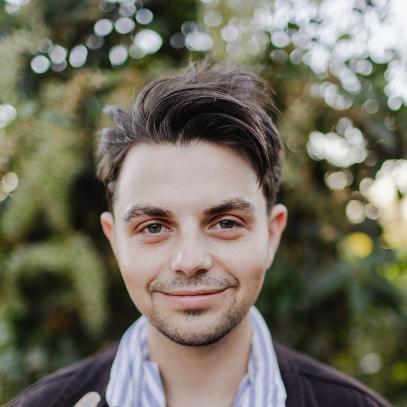

30.4515° N, 91.1871° W — Baton Rouge, LA
GIS & Wildlife Conservation Specialist
Based in Baton Rouge, LA · Roots in Mariposa & Pacifica, CA
I am a GIS and Geography professional with a focus on wildlife conservation, habitat management, and land stewardship. My work involves mapping species locations, habitat, land boundaries, and other geographic data to support informed conservation and land-management decisions. I am currently studying Geography and Anthropology at Louisiana State University, where I am developing my technical and analytical skills while deepening my understanding of people, landscapes, and the relationship between communities and the environment. My career goal is to apply my GIS and field-based knowledge to conservation and land-management work, with a particular interest in opportunities with the National Park Service or U.S. Forest Service.
About
I grew up in Yosemite, where being outdoors was not really a hobby. It was simply part of everyday life. Growing up surrounded by the park's forests, wildlife, trails, and landscapes gave me an appreciation for the outdoors from an early age and ultimately influenced my decision to pursue geography. Geography gives me a way to understand and work with the land, using mapping, data, and field research to better understand landscapes and the species that depend on them.
I am currently studying Geography and Anthropology at Louisiana State University, where I am developing my GIS, geographic analysis, and field-mapping skills. My interests include mapping species locations, documenting habitat, and using geographic data to better understand and manage natural resources. I am also interested in the policy and planning side of conservation, particularly how public lands are managed and how research and geographic information can support those decisions. My career goal is to work in conservation or land management, with a particular interest in opportunities with the National Park Service, U.S. Forest Service, or other public agencies responsible for protecting and managing our nation's natural resources.
Selected work
GIS Internship — LSU Burden Museum & Gardens
Mapped and cataloged the camellia collection at LSU's Burden Museum & Gardens — over 3,000 plants across dozens of beds. I built ArcGIS shapefiles for the bed boundaries and individual plants, and kept up an accession database (genus, species, cultivar, provenance) checked against the International Camellia Register.
Interactive 3D terrain model
An interactive 3D model of Linda Mar Beach built on USGS terrain data. You can slide through NOAA's sea-level-rise projections out to 2100 and watch the shoreline shift using satellite data from 1984–2026, alongside over a century of tide-gauge readings.
Projection-augmented relief model
An app I built to run a projection-augmented relief model of the Mississippi River near Baton Rouge. It layers lidar, old meander scars, and a flood simulation to show how the river shaped this stretch of land — the channel cutoffs the state dug, the Old River Control Structure, and the bluff Baton Rouge sits on.